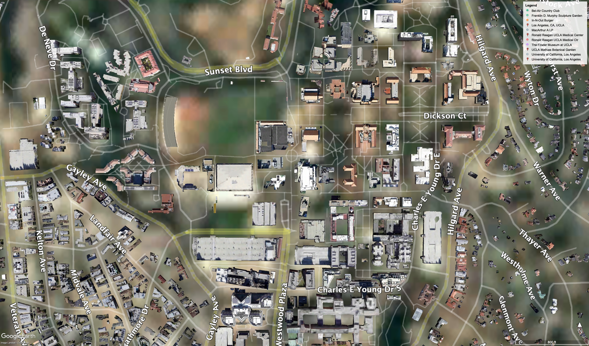

UCLA through time: 1985–2025
Historical aerial imagery shows how UCLA and its surrounding landscape changed between 1985 and 2025. Click a year to follow UCLA's growth over time.

1985
Source: Google Earth historical imagery from U.S. Geological Survey
Graphic reporting and interactive by: Madison Jones, Daily Bruin Contributor